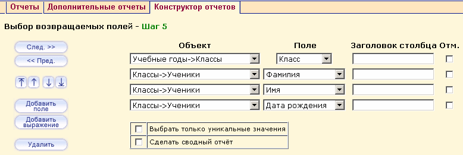

На этом шаге, на основе выбранных ранее объектов данных, вы должны указать те поля, которые будут выводиться в отчете на экран. Для определения нужных полей, выберите их из выпадающего списка.
При добавлении двух и более возвращаемых полей, появляются кнопки для изменения порядка следования этих полей в результирующем отчете:
Примечание: При удалении одного из группируемых полей, введенных на Шаге 4 – «Выбор способа группировки данных», автоматически системой это поле будет удалено и с Шагов 5 – «Выбор возвращаемых полей», 7 – «Выбор порядка сортировки». При добавлении нового возвращаемого поля на Шаге 5 или новой сортировки по полю на Шаге 7, если в создаваемом отчете уже были добавлены поля для группировки на Шаге 4, система автоматически добавит это новое поле в число группируемых. При удалении же из группировки всех полей сразу возвращаемые поля и поля, по которым производится сортировка, останутся в отчете в неизменном состоянии.
Редактор выражений
Если вам нужно не просто поле, а какая-то производная от него (например, количество), то с помощью кнопки Добавить выражение вы сможете попасть в конструктор выражений. Здесь на основе данных от объектов, выбранных на Шаге 2 и Шаге 3, вы сможете с помощью встроенных функций Минимум, Максимум, Количество получить интересующий результат. Эти выражения вы можете, в свою очередь, использовать в более сложных формулах.
Отчеты могут возвращать от 1 до 5 обобщенных, т.е. групповых значений по полям строк группы, точно так же, как и значение одного поля. Это делается с помощью групповых функций. Групповые функции производят одно значение для всей группы:
| · | КОЛИЧЕСТВО возвращает количество строк для всей группы полей;
|
| · | СУММА возвращает арифметическую сумму всех выбранных значений данного поля;
|
| · | СРЕДНЕЕ возвращает усреднение всех выбранных значений данного поля;
|
| · | МАКСИМУМ возвращает наибольшее из всех выбранных значений данного поля;
|
| · | МИНИМУМ возвращает наименьшее из всех выбранных значений данного поля.
|
Примечание: При удалении группировки с выражением, ранее введенной на Шаге 4 – «Выбор способа группировки данных», автоматически системой будет удалена и групповая функция с Шага 5 – «Выбор возвращаемых полей», а при добавлении автоматически добавлена с функцией КОЛИЧЕСТВО.
Флаг "Выбрать только уникальные значения"
В некоторых из сконструированных запросов возможно «размножение информации», если не использовать при выводе все его поля (или использовать какой-нибудь объект, содержащий в себе «уточняющую информацию»). В результате, при выводе, поле будет размножено столько раз, сколько будет существовать пар «свойство-уточняющее свойство». Например, мы хотим получить список учеников в учебном году, но при конструировании мы добавим уточняющий объект с учебными периодами. Тогда будут существовать пары: (имя ученика - 1 четверть), (имя ученика - 2 четверть), (имя ученика - 3 четверть), (имя ученика - 4 четверть). А при выводе только имени - оно напечатается четыре раза - если не выставлен флаг «Выбрать только уникальные значения», и один раз - если флаг выставлен.
Флаг "Сделать сводный отчёт"
В некоторых случаях отчёт простого вида:
№ Поле А Поле B Поле С ...
1 A1 B1 С1 ...
2 A1 B2 С2 ...
3 A1 B3 С3 ...
4 A2 B1 С4 ...
5 A2 B2 С5 ...
6 A2 B3 С6 ...
7 A3 B1 С7 ...
8 A3 B2 С8 ...
9 A3 B3 С9 ...
удобно напечатать в виде сводного отчёта:
B1 B2 B3
A1 C1, ... С2, ... C3, ...
A2 C4, ... С5, ... C6, ...
A3 C7, ... С8, ... C9, ...
Для этого необходимо установить флаг Сделать сводный отчёт.
Примечание: Для сводного отчёта необходимо, чтобы было более двух полей вывода и была выполнена сортировка (или группировка) по первому и второму выводимым свойствам. Иначе отчет не будет выводиться (в первом случае) или отобразится некорректно (во втором случае).
В нашем примере отчета Списки мальчиков 90-91 гг. рождения, возвращаемые поля выберем из двух объектов: "Классы" и "Ученики". Из первого объекта в качестве возвращаемого поля выберем класс, а из второго: фамилия, имя, дата рождения. После определения всех необходимых полей и выражений нажимаем на кнопку След. >> для перехода на Шаг 6 - Выбор критерия (фильтры).
